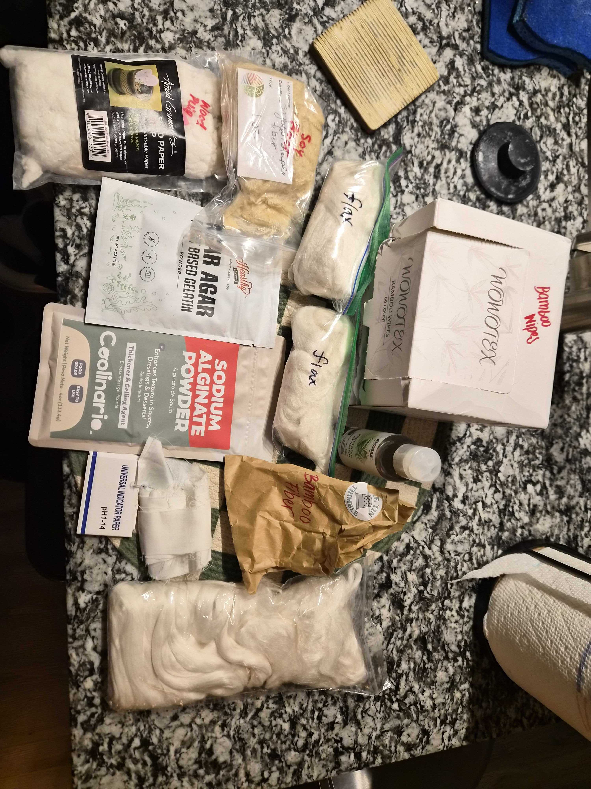
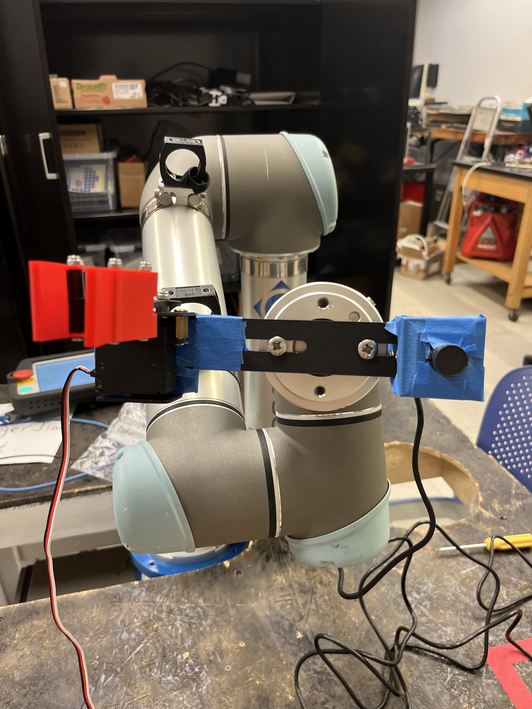
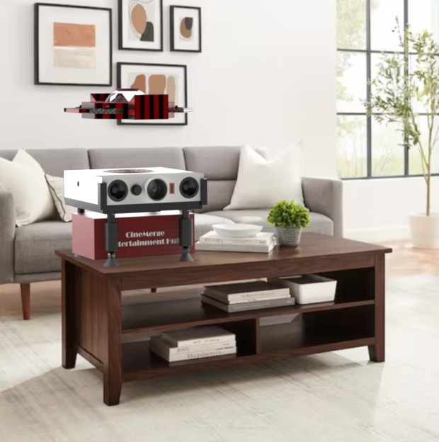

Club Project
Ongoing
Sustainable Menstrual Pad
Engineers without Borders - Wish For WASH | Oct 2024 - Present
- Developing an adhesive-free, sustainable menstrual pad with a 14-member bioplastics team to match absorbency, comfort, and cost of industry standards (benchmarked against Always pads).
- Conducted single-material absorbance testing on 9 materials per ASTM and ISO standards using water and gelatin blood simulant, identifying Himalayan nettle and wood pulp as highest mass-gain core materials.
- Progressing to composite and rewet testing to evaluate candidate materials across pad layers for absorbency, permeability, and skin comfort.

Club Project
Ongoing
Force Sensor for 3D-Printed Prosthetic
Medical Robotics Club: Team Limbo | Sep 2025 - Present
- Developing Force Sensing Resistor (FSR) calibration SOP to standardize sensor variability for force sensor integration into low-cost 3D-printed prosthetic for trans-radial amputees.
- Calibrating FSRs by applying known weights, collecting analog voltage data via Arduino, and analytically defining touch thresholds (soft, medium, hard) as prosthetic feedback for the user.
- Designed a 3D-printed force distributor to evenly concentrate applied loads onto the FSR sensing surface for repeatable calibration testing.

Personal Project
Ongoing
Breadboard Calendar
Personal Project | Feb 2026 - Present
- Designed a 3D-printed perpetual desk calendar styled after a breadboard, displaying the date using recognizable electrical-component shapes (LED marker, square rectifiers, Raspberry Pi Picos).
- Selected each component's geometry deliberately so the calendar reads clearly at a glance while fitting on a small desk.
- Rescaled all parts 150% after a first print came out too small to fabricate cleanly — a lesson in balancing realism against printability.

Class Project
Completed
Autonomous Competition Robot
ME2110 | Sep 2025 - Nov 2025
- Collaborated with 3 team members to design and fabricate a fully-autonomous robot in 8-weeks under a $120 budget using provided mechatronics components and Arduino Uno for competition against 72 teams.
- Leveraged Onshape, Inkscape, and Bambu Studio for component fabrication on Trotec Laser machines and BambuLab P1S printers.
- Documented concept generation and evaluation, quality function deployment, and design decisions through technical reports and presentations using Morphological Charts, Engineering Specification Sheets, and House of Quality.

Research Project
Ongoing
Claw Attachment
Undergraduate Research | Jan 2026 - Present
- Worked in a 2-person team to integrate a Raspberry Pi 5, machine vision system, and custom mechanical gripper with a UR5 robotic arm for industrial pick-and-place applications.
- Contributed 70+ labeled images to a dataset in Roboflow for training an object detection model to identify test tube location and color.
- Designed 3D-printed claw modification for existing gripper mechanism to improve object grasping performance.

Class Project
Completed
All-in-One Projector, Popcorn Maker, and Food/Drink Delivery Drone
ME1670 | Aug 2024 - Dec 2024
- Modeled 6 complex parts to form drone component while ensuring compatibility of overall design with 5-person group.
- Created project report including ASME assembly and part engineering drawings, assembly instructions, and high-definition renders.

Class Project
Completed
Closet Door Stopper
ME1670 | Aug 2024 - Dec 2024
- Designed sliding hook mechanism in SolidWorks with cantilever and hinge joint interlocking features for seamless assembly.
- Performed tolerance analysis by comparing nominal and actual dimensions from EOS Formiga P110 to ensure precision and functionality.
No projects in this category yet — check back soon, or add one by copying a .project-entry block in projects.html and setting its data-category.